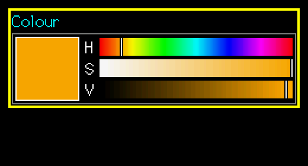
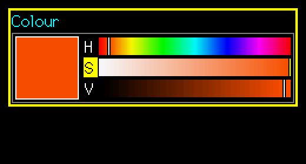

SuperColorPicker
A swatch plus three gradient bars (hue, saturation, value). Gives RGB565 or RGB888.
Editable (modal edit)src/SuperColorPicker.h
What it looks like


Real renders from the library (headless, dark theme, Font2, shown at 2x).
Quick start
SuperColorPicker cp(&lcd, 10, 10, 220, &lgfx::fonts::Font2, &Enc, &BtnA, &BtnB);
cp.SetColor565(TFT_ORANGE);
cp.SetOnAccept([](void*){ uint8_t r,g,b; cp.GetRGB(r,g,b); });Unique features
- H 0-359, S 0-100, V 0-100; each bar shows the colour along that axis. The colour is stored as HSV.
- Set and get as RGB565 (
SetColor565), RGB888 (SetRGB / GetRGB) or HSV.
GUI workflow
Encoder changes the active component (marked with the cursor colour). A short = next component (H, S, V, H...). A long = accept. B short = cancel; B long = revert and keep editing.
Touch needs no activation: touching a band sets that component at once; dragging adjusts it live; lifting commits. Tapping the swatch or a long press starts / accepts an edit.
Event workflow
edit contract. OnChange = the colour changed live (use for previews); OnAccept = accepted.
Main API
| Call | What it does |
|---|---|
SetHSV / GetHSV | Components |
SetRGB / GetRGB | 8-bit |
SetColor565 | RGB565 in |
Pitfalls
Watch outRound-tripping RGB565 through HSV can change a low bit; keep your own copy if you need exact values.